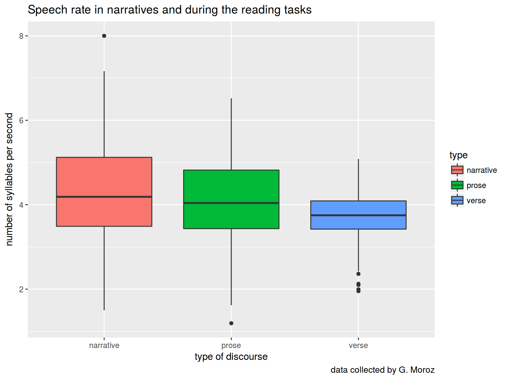
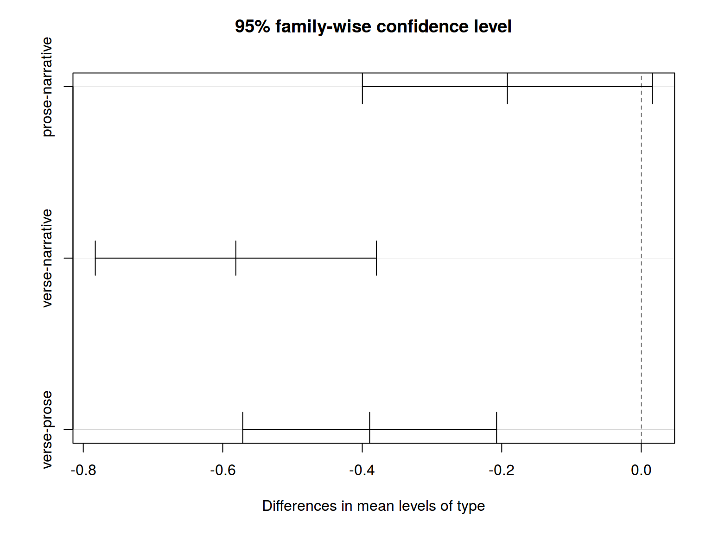
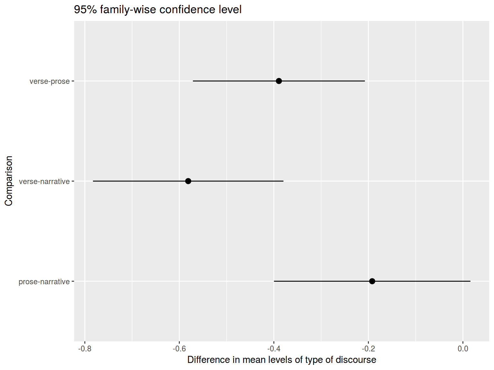
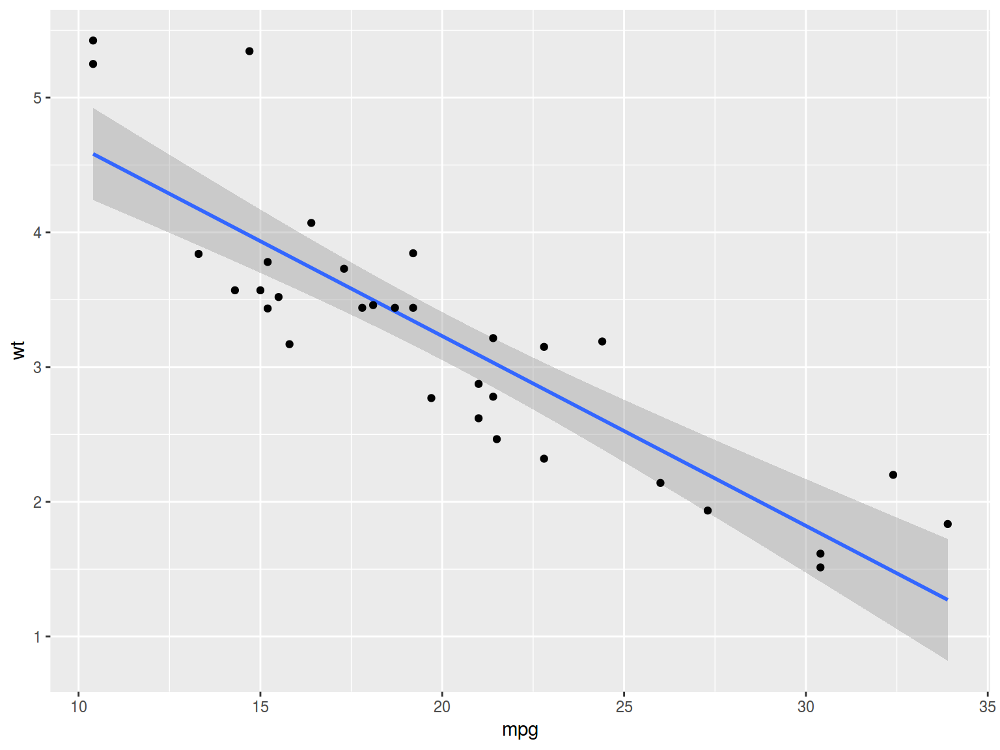
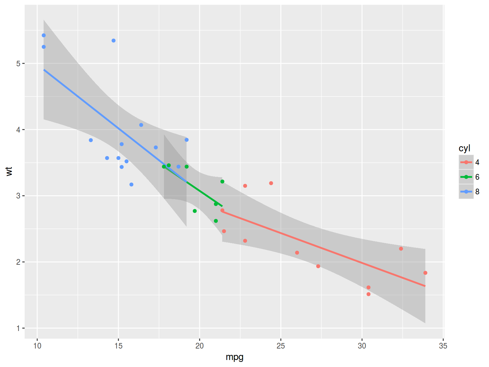

02.02.2017
Variable types
What we achieved:
Today:
This summer I collected data during the fieldwork in Khodz (Koshekhablsky District, Republic of Adygea, Russia). The participants (nine native speakers of Kuban dialect of Kabardian) were asked to solve several speech production tasks:
Articulation rate was calculated as the number of syllables per second.
Data are here
speech_rate <- read.csv("https://goo.gl/amxSxi")
str(speech_rate)## 'data.frame': 710 obs. of 3 variables:
## $ dictor: Factor w/ 10 levels "all","D1","D2",..: 2 2 2 2 2 2 2 2 2 2 ...
## $ type : Factor w/ 3 levels "narrative","prose",..: 1 1 1 1 1 1 1 1 1 1 ...
## $ rate : num 2.41 3.89 3.39 3.4 2.62 ...How speech rate depends on speech activity?
library(tidyverse)
speech_rate %>%
ggplot(aes(type, rate, fill = type))+
geom_boxplot()+
labs(title = "Speech rate in narratives and during the reading tasks",
caption = "data collected by G. Moroz",
x = "type of discourse",
y = "number of syllables per second")
We can use pairwise comparison, but … there is a Multiple comparison problem.
Anova’s H\(_0\) is that μ\(_{narrative}\) = μ\(_{prose}\) = μ\(_{verse}\)
Anova’s H\(_1\) is that μ\(_{narrative}\) ≠ μ\(_{prose}\) or μ\(_{narrative}\) ≠ μ\(_{verse}\) or μ\(_{verse}\) ≠ μ\(_{prose}\)
fit <- aov(rate~type, data = speech_rate)
summary(fit)## Df Sum Sq Mean Sq F value Pr(>F)
## type 2 41.4 20.7 25.88 1.42e-11 ***
## Residuals 707 565.4 0.8
## ---
## Signif. codes: 0 '***' 0.001 '**' 0.01 '*' 0.05 '.' 0.1 ' ' 1All right. There is a statistically significant result, so we can reject H\(_0\) (all groups are not simply random samples of the same population). But what the difference between them? There are a lot of different ways to understand it. We will use Tukey’s HSD (honest significant difference) test.
tk <- TukeyHSD(fit)
tk## Tukey multiple comparisons of means
## 95% family-wise confidence level
##
## Fit: aov(formula = rate ~ type, data = speech_rate)
##
## $type
## diff lwr upr p adj
## prose-narrative -0.1919299 -0.3998061 0.01594636 0.0773714
## verse-narrative -0.5812460 -0.7827826 -0.37970950 0.0000000
## verse-prose -0.3893162 -0.5713164 -0.20731599 0.0000019Fast visualization:
plot(tk)
ggplot
tk <- data.frame(tk$type)
tk$Comparison <- row.names(tk)
tk %>%
ggplot(aes(Comparison, y = diff, ymin = lwr, ymax = upr)) +
geom_pointrange() +
labs(title = "95% family-wise confidence level",
y = "Difference in mean levels of type of discourse") +
coord_flip()
mtcars %>%
ggplot(aes(mpg, wt))+
geom_smooth(method = "lm")+
geom_point()
fit <- lm(mpg~wt, mtcars)
summary(fit)##
## Call:
## lm(formula = mpg ~ wt, data = mtcars)
##
## Residuals:
## Min 1Q Median 3Q Max
## -4.5432 -2.3647 -0.1252 1.4096 6.8727
##
## Coefficients:
## Estimate Std. Error t value Pr(>|t|)
## (Intercept) 37.2851 1.8776 19.858 < 2e-16 ***
## wt -5.3445 0.5591 -9.559 1.29e-10 ***
## ---
## Signif. codes: 0 '***' 0.001 '**' 0.01 '*' 0.05 '.' 0.1 ' ' 1
##
## Residual standard error: 3.046 on 30 degrees of freedom
## Multiple R-squared: 0.7528, Adjusted R-squared: 0.7446
## F-statistic: 91.38 on 1 and 30 DF, p-value: 1.294e-10fit2 <- lm(mpg~wt+hp, mtcars)
summary(fit2)##
## Call:
## lm(formula = mpg ~ wt + hp, data = mtcars)
##
## Residuals:
## Min 1Q Median 3Q Max
## -3.941 -1.600 -0.182 1.050 5.854
##
## Coefficients:
## Estimate Std. Error t value Pr(>|t|)
## (Intercept) 37.22727 1.59879 23.285 < 2e-16 ***
## wt -3.87783 0.63273 -6.129 1.12e-06 ***
## hp -0.03177 0.00903 -3.519 0.00145 **
## ---
## Signif. codes: 0 '***' 0.001 '**' 0.01 '*' 0.05 '.' 0.1 ' ' 1
##
## Residual standard error: 2.593 on 29 degrees of freedom
## Multiple R-squared: 0.8268, Adjusted R-squared: 0.8148
## F-statistic: 69.21 on 2 and 29 DF, p-value: 9.109e-12How to make numeric to categorical conversion?
a <- sin(1:100) # Create a random vector
b <- c(-1, -0.5, 0, 0.5, 1) # Create a vector of boundaries
table(cut(a, breaks = b))##
## (-1,-0.5] (-0.5,0] (0,0.5] (0.5,1]
## 35 15 16 34# if the intervals should be closed on the right
table(cut(a, breaks = b, right = F))##
## [-1,-0.5) [-0.5,0) [0,0.5) [0.5,1)
## 35 15 16 34How to make categorical to numeric conversion? Dummy variables.
Dummy variable it is a technique for creating a numeric variable from categorical. For each \(n-1\) levels of a categorical variable it creates a dummy variable, which have value 1 for cirtain level of variable and 0 otherwise.
sex variable with 2 levels can be replaced with 1 dummy variable sex_female:
Eye color variable with 4 levels (blue, brown, gray, green) can be replaced with 3 dummy variables
| eye_color | eye_blue | eye_brown | eye_gray |
|---|---|---|---|
| blue | 1 | 0 | 0 |
| brown | 0 | 1 | 0 |
| gray | 0 | 0 | 1 |
| green | 0 | 0 | 0 |
mtcars %>%
mutate(cyl = factor(cyl)) %>%
ggplot(aes(mpg, wt, color = cyl))+
geom_smooth(method = "lm")+
geom_point()
fit2 <- lm(mpg~wt+factor(cyl), mtcars)
summary(fit2)##
## Call:
## lm(formula = mpg ~ wt + factor(cyl), data = mtcars)
##
## Residuals:
## Min 1Q Median 3Q Max
## -4.5890 -1.2357 -0.5159 1.3845 5.7915
##
## Coefficients:
## Estimate Std. Error t value Pr(>|t|)
## (Intercept) 33.9908 1.8878 18.006 < 2e-16 ***
## wt -3.2056 0.7539 -4.252 0.000213 ***
## factor(cyl)6 -4.2556 1.3861 -3.070 0.004718 **
## factor(cyl)8 -6.0709 1.6523 -3.674 0.000999 ***
## ---
## Signif. codes: 0 '***' 0.001 '**' 0.01 '*' 0.05 '.' 0.1 ' ' 1
##
## Residual standard error: 2.557 on 28 degrees of freedom
## Multiple R-squared: 0.8374, Adjusted R-squared: 0.82
## F-statistic: 48.08 on 3 and 28 DF, p-value: 3.594e-11